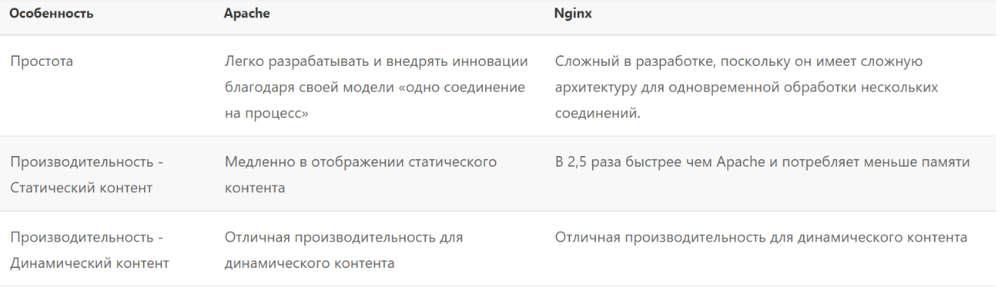
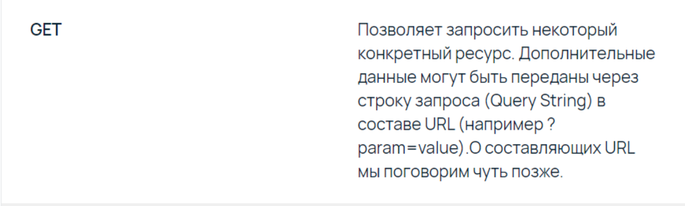

PHP SERVER
Определение Сервер
Сервером в большинстве случаев называют непрерывно работающий компьютер, который выполняет какую-либо сервисную задачу и даёт клиентам доступ к своим ресурсам. Также, сервером могут называть программу, которая выполняет аналогичные функции.
Виды серверов
Apache
Apache («Апачи», Apache HTTP Server) — это открытое кросс-платформенное программное обеспечение для размещения и поддержки веб-сервера.
Виды серверов
NGINX
NGINX — это веб-сервер и почтовый прокси, который работает под управлением операционных систем семейства Linux/Unix и Microsoft. В отличие от других продуктов данного сегмента, Nginx использует иной принцип обработки входящих данных. ПО разбивает каждый запрос пользователя на несколько мелких, упрощая таким образом обработку каждого. В терминологии Nginx они получили название рабочее соединение.
Пример использования в связке apache и nginx
Сравнение двух серверов
Сравнение двух серверов
Запуск встроенного php сервера
Для запуска php сервера используется команда php –S localhost:8000
Веб-сервер запускает только один однопоточный процесс, поэтому PHP-приложения будут останавливаться, если запрос блокируется. Запросы URI обслуживаются из текущего рабочего каталога, в котором был запущен PHP, если только не используется опция -t для указания явного корня документа. Если запрос URI не указывает файл, то возвращается либо index.php, либо index.html в указанном каталоге. Если ни один из файлов не существует, поиск index.php и index.html будет продолжен в родительском каталоге и так далее, пока один из них не будет найден или пока не будет достигнут корень документа. Если найден index.php или index.html, он возвращается
Разъяснения про localhost
За каждым именем в URL-адресах веб-сайтов в Интернете стоит ряд цифр, называемых IP-адресами (интернет-протоколами). IP означает Интернет-протокол и является первым уровнем сети, который будет использоваться в Интернете. 127.0.0.1 IP Этот конкретный IP-адрес, также известный как локальный хост, является основой, для которой обрабатываются петлевые сетевые подключения. Loopback означает «вернуться назад», и он делает 127.0.0.1, потому что это адрес вашего устройства.
Если мы запустим php сервер в пустом каталоге
Добавляем index.php
Заполняем наш index.php
Наш результат
Создаём в папке homepage.php
Открываем наш homepage.php в браузере
Добавляем php код в html
Результат добавления кода
Процесс запроса
Рассмотрим по этапно как происходить запрос от пользователя к серверу и как в нем участвует php
Процесс запроса - этап 1
Сначала пользователь отправляет запрос на сервер
Процесс запроса - этап 2
Далее если сервер видит php файл, то он его передает php интерпретатору
Процесс запроса - этап 3
Далее php обработывает запрос выполняет все функции, обращается к базе данных, или к файловой системе если нужно
Процесс запроса - этап 4
Послее такого как php обработал запрос, он ответ возвращает серверу, а сервер в свою очередь клиенту
HTTP
HTTP
HTTP — протокол прикладного уровня передачи данных, изначально — в виде гипертекстовых документов в формате HTML, в настоящее время используется для передачи произвольных данных.
Блокировка HTTP
Head-of-Line Blocking или упростим до "блокировка соединения". Как происходит - у нас есть канал для передачи данных, мы отправили запрос в этот канал, ждём ответа, получили полностью ответ, отправили следующий запрос.
Версия HTTP 1.1
Первая версия протокола http требовала дожидаться получения ответа перед отправлением следующего запроса в рамках одного соединения. Во второй версии протокола - это исправили, соединение может использоваться без ожидания завершения уже отправленного запроса.
Версия HTTP 2
Первая версия протокола http требовала дожидаться получения ответа перед отправлением следующего запроса в рамках одного соединения. Во второй версии протокола - это исправили, соединение может использоваться без ожидания завершения уже отправленного запроса.
Версия HTTP 3
Проблема блокировки была решена в версии 2 — но только на уровне http протокола. На транспортном уровне tcp она все еще есть в виде обязательного последовательного получения пакетов. Поэтому версию 3 собрали на протоколе udp, в которой этой особенности нет, и назвали это QUIC.
URI
URI — символьная строка, позволяющая идентифицировать какой-либо ресурс: документ, изображение, файл, службу, ящик электронной почты и т. д.
URL — это URI, который, помимо идентификации ресурса, предоставляет ещё и информацию о местонахождении этого ресурса. А URN — это URI, который только идентифицирует ресурс в определённом пространстве имён
Состав URL
Ping pong система
Базовая структура request/response
Состав http request
HTTP метод GET
HTTP метод POST
Ещё http методы
- HEAD - метод HEAD запрашивает ответ, идентичный запросу GET, но без тела ответа.
- PUT - метод PUT заменяет все текущие представления целевого ресурса содержимым запроса .
- DELETE - метод DELETE удаляет указанный ресурс
- CONNECT - метод CONNECT устанавливает туннель к серверу, идентифицированному целевым ресурсом.
- PATCH - метод PATCHприменяет частичные изменения к ресурсу.
HTTP ответ
HTTP коды состояний
HTTP коды состояний
HTTP коды состояний
HTTP коды состояний
HTTP коды состояний
HTTPS
HTTPS (HyperText Transfer Protocol Secure) — это расширение протокола HTTP, которое поддерживает шифрование. Какие возможности имеет безопасное соединение HTTPS:
Шифрование. Все данные передаются в зашифрованном виде. Злоумышленники не могут перехватить информацию, которой обмениваются пользователи на сайте, и не могут отследить их действия.
Сохранение данных. Все изменения данных фиксируются. Если злоумышленник пытался взломать защиту, это отобразится в сохранённых данных.
PHP in SERVER
Суперглобальные переменные PHP
PHP + HTML
Вывод переменных
Результат вывода $_SERVER